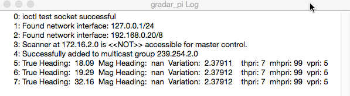
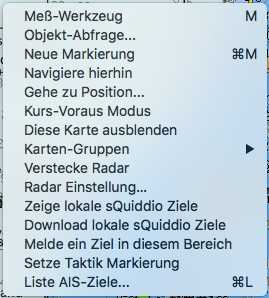

Radar Plugins
Es gibt im Moment 3 verschiedene Radar Plugins für OpenCPN, die dazu bestimmt sind, bei sog. Broadband Radarantennen das Radarbild als Überlagerung auf die OpenCPN Kartenansicht zu projizieren. Das GRader Plugin ist für Garmin Antennen, das BR24Radar Plugin für die Navico Antennen BR24, 3G und 4G, die auch unter anderen Herstellernamen angeboten werden, und das gxradar Pluging für xHD Antennen von Garmin. Letzteres wurde noch nicht für diese OpenCPN Version compiliert. Mangels Radargerät konnte ich bisher keines dieser Plugins selber testen.
GRadar Plugin
Das GRadar Plugin startet auch ohne angeschlossene Radarantenne auf Mac OS X. OpenGL sollte aktiviert sein. Nähere Informationen dazu kann man unter dieser Datei finden: gradar.zip


Sollte es Anwender geben, die ein entsprechendes digitales Radargerät haben, bin ich gerne bereit hier zu helfen. Das GRadar Plugin braucht den Anschluß der Radarantenne über das Ethernet-Kabel der Antenne. WireShark zur Beobachtung des Datenstroms ist eine wertvolle Hilfe bei der weiteren Entwicklung, da es von Gerät zu Gerät Unterschiede gibt. Das oben gezeigte Bild ist ein Beispiel von überlagerten Radarechos auf der Karte. Die Einstellungen ruft man mit dem Kontextmenü (rechter Mausklick auf die Karte) auf wie im Bild unten mit Menüpunkt "Radar Control Garmin":
Es sind dann alle Einstellungen für die Radarantenne verfügbar:
BR24Radar Plugin
Nach der Aktivierung dieses Plugins in den OpenCPN Optionen unter Plugins können dort auch einige Grundeinstellungen für BR24Radar vorgenommen werden:
Die weiteren Einstellungen werden ähnlich wie beim GRadar Plugin mit dem Aufruf des Kontextmenü Eintrags "Radar Einstellung..." gemacht:

Mangels eigenem Radargerät kann ich das weder testen, noch weitere Ausführungen dazu machen. Konsultieren Sie die Bedienungsanleitung des Gerätes.